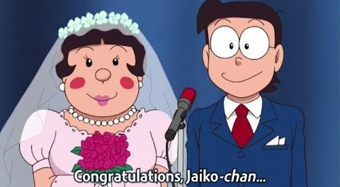

Despite being extreme opposites, they would have made an intriguing couple since, as we all know, opposites attract. Shizuka and Nobita, on the other hand, were nearly identical. In other words, this could have been the end result, but it wasn't. Because Jaiko is Gian's only sister and they've been discussing how much Nobita was a victim of Gian's, it's uncertain how they'd be able to inform everyone about their love interest, no matter how promising it appears. Except's conclusion that courting a friend's sister is sinful would have surprised both Gian and Nobita. Jaiko is shown as tough and self-sufficient, taking care of her older brother Gian while keeping a no-nonsense approach. They have polite exchanges, but their bond is more platonic than anything else. When Nobita and Jaiko eventually decide to marry, they must confront their separate families and friends with the tough task of breaking the news.

Even though some people might be surprised or confused by their relationship, those who know them well are aware of the connection they share and are willing to support it. The celebration of their wedding ceremony would be an occasion filled with happiness and fond memories for all of their loved ones.
They would make a public declaration of their love for one another and their commitment to build a life together by exchanging vows. The ceremony would incorporate elements of tradition, joy, and love, reflecting the couple's distinct personalities in the process. Nobita and Jaiko start their married life by taking the first step on a new adventure together.
They embrace their roles as partners and closest friends, providing emotional and logistical support for one another through the highs and lows of life. Their connection would be marked by a profound sense of companionship, along with the high levels of respect and understanding that they shared with one another.
Nobita and Jaiko have known each other since childhood, which means they have a deep understanding of each other's strengths, weaknesses, and quirks. This shared history could create a strong foundation for their relationship, as they are already familiar with each other's personalities and can support one another accordingly.
Nobita is often portrayed as a dreamer who struggles with confidence and motivation, while Jaiko is depicted as a strong and independent character. Their contrasting personalities could work well together, as Jaiko's determination and pragmatism could help Nobita overcome his insecurities and achieve his goals.
Nobita and Jaiko's bond as friends and potentially as life partners could provide them with a deep emotional support system. They would be there for each other through thick and thin, offering comfort, encouragement, and understanding during challenging times.
Being childhood friends, Nobita and Jaiko would share a sense of familiarity and comfort in each other's presence. They would have an established level of trust and camaraderie, which can contribute to a stable and fulfilling relationship.
By marrying Jaiko, Nobita would also become part of Gian's family, as Jaiko is Gian's sister. This could strengthen the friendship between Nobita and Gian, allowing them to form a deeper bond as brothers-in-law. It could lead to more harmonious interactions within their social circle.
Nobita and Jaiko's relationship could provide opportunities for personal growth and development. They could inspire and motivate each other to become better versions of themselves, supporting each other's dreams and aspirations.